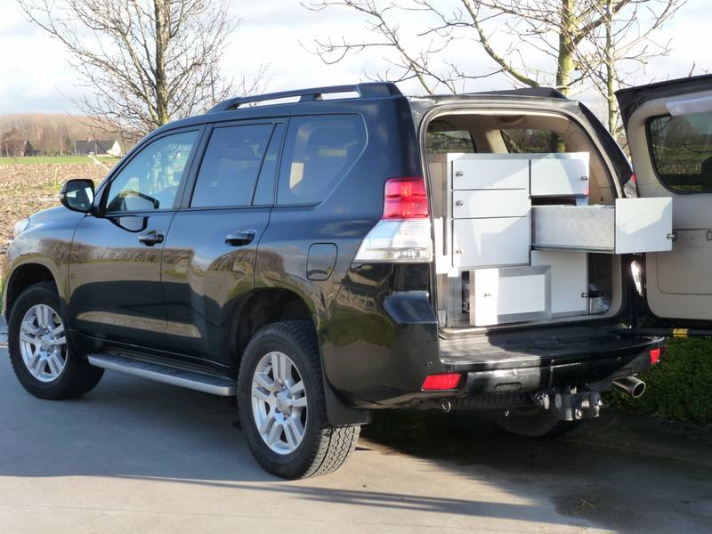

01
Baanpraktijk
Voor routinezorg komen we aan huis: gezondheidscontrole, vaccinatie, tandverzorging, mankheidsonderzoek, verloskunde of veulencontrole. Meer gespecialiseerd onderzoek gebeurt op de praktijk.